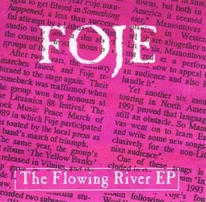

 |
the flowing river ep |
The Flowing River EP – paskutinis studijinis grupės Foje albumas, taip pat antras angliškas jos albumas. Jis buvo įrašytas ir išleistas 1996 m.
Kai kurios albumo dainos buvo pasirodžiusios ankstesniajame, bandomajame albume Live on the Air, o daina „I Remember“ – albume Vandenyje.
- Andrius Mamontovas – vokalas, gitara
- Arnoldas Lukošius – klavišiniai
- Darius Burokas – bosinė gitara
- Algis Kriščiūnas – būgnai, perkusija
BUT RIVER FLOWS
And we never know that we know so much
And we never .... all these things to touch
And we never dream always dreams to dream
Cause we never talk seems we always scream
But the River flows
River flows
River flows
I forgot myself I forgot what's right
And there's nothing new in the air tonight
And there's nothing young in the young man's space
And there's no one left .....
DAY BECOMES A NIGHT
I REMEMBER
I remember my childhood which comes back to me
I remember that funny incredible days
I remember I have a couple things to believe
I remember I trusted what people say
What did I really forget
Can't remember quite right
I remember my school years, my very first kiss
When I took a guitar, when I broke my first string
I remember my girlfriend who I really miss
I remember that day when I started to sing
I'll never forget those people I've met
I'll never forget those countries I've saw
I'll never forget that we worried they said
I remember where I was five minutes ago
THINK ABOUT LIFE FORMS
Think about life forms
Isn't beautiful spring after winter?
Isn't painful day after day?
Before the bird I was a horse.
Before the horse I was a wolf.
Just think about fire that burns in your heart.
Take care of the flowers dying in your hand.
But don't forget about water, could wash you away.
Think about life forms you feel everyday…
You took that subway, then you change your name.
But the spirit inside you stays always the same.
The highest tree the smallest fish.
You know you'll be all that you could wish.
Just think about fire that burns in your heart.
Take care of the flowers that die in your hand.
But don't forget about water, could wash you away.
Think about life forms you feel everyday…
MY WOMAN IS PREGNANT
There's a war outside
Such a foolish game
So you can watch them fight
But favorits always the same
'Cause my woman is pregnant
I'm sure has nothing to do
She wants to save her baby
I'll try to save her too
There's a war outside
There's no peace at all
There's the place to die
So you can watch them fall
But my woman is pregnant
I'm sure has nothing to do
She wants to save her baby
I have to save her too
There's a war outside
Same as inside you
I have no tears to cry
She's not crying too
000 FOR MYSELF
THE LAND
I went to the promise land,
A land of a happy end.
Where people are always smiling,
A loneliness they trying to hide.
They spend their lifes for liberty,
But someone will never let them free.
They always have a second chance,
But finally they get a golden chains.
Will they get love?
Will they get love?
Will they get love...?
Will they get love?
So many places I've seen before,
So many times I've been around the world.
But I just can't forget the land,
A land of happy lucky end.
Where money could buy anything,
Including things that must be for free.
People there always smiling,
The hoplesness they're trying to hide.
Will we get love?
Will we get love?
Will we get love...?
Will we get love?